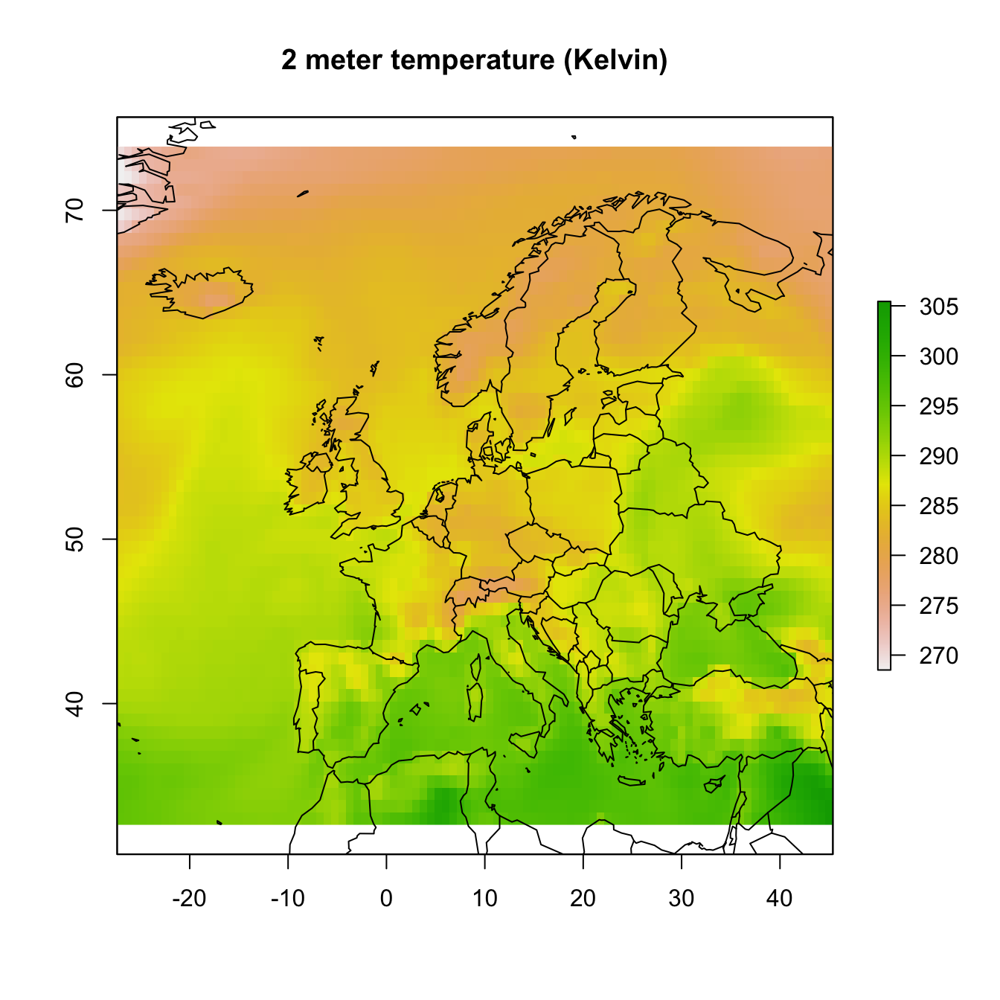

Programmatic interface to the ‘ECMWF’ web API services. Allows for easy downloads of ECMWF public data.
Before starting save your provided ECMWF key to your local keychain. In this example I use my R development account with the key hidden using Xs. The package does not allow you to use your key inline in scripts to limit security issues when sharing scripts on github or otherwise.
# set a key to the keychain
wf_set_key(email = "khrdev@outlook.com",
key = "XXXXXXXXXXXXXXXXXXXXXX")
# you can retrieve the key using
wf_get_key(email = "khrdev@outlook.com")
# the output should be the key you provided
# in this case represented by the fake X string.
# "XXXXXXXXXXXXXXXXXXXXXX"Before you can download any data you have to make sure to accept the terms and conditions here: https://apps.ecmwf.int/datasets/licences/general/.
You can list ancillary data such as user information, datasets and services using the following calls.
# user info
user_info <- wf_user_info(email = "khrdev@outlook.com")
head(user_info)
#> first_name code uid last_name full_name
#> 1 Koen 200 khrdev@outlook.com Hufkens Koen Hufkens
#> email
#> 1 khrdev@outlook.com
# services
services <- wf_services(email = "khrdev@outlook.com")
head(services)
#> name url
#> 1 altitude https://api.ecmwf.int/v1/services/altitude
#> 2 cities https://api.ecmwf.int/v1/services/cities
#> 3 dummy_epsgram https://api.ecmwf.int/v1/services/dummy_epsgram
#> 4 echo https://api.ecmwf.int/v1/services/echo
#> 5 mars https://api.ecmwf.int/v1/services/mars
#> 6 meteogram https://api.ecmwf.int/v1/services/meteogram
# datasets
datasets <- wf_datasets(email = "khrdev@outlook.com")
head(datasets)
#> name
#> 1 c3s_seasonal
#> 2 cams_climate_forcings
#> 3 cams_esuite
#> 4 cams_gfas
#> 5 cams_ghg_inversions
#> 6 cams_nrealtime
#> url
#> 1 https://api.ecmwf.int/v1/datasets/c3s_seasonal
#> 2 https://api.ecmwf.int/v1/datasets/cams_climate_forcings
#> 3 https://api.ecmwf.int/v1/datasets/cams_esuite
#> 4 https://api.ecmwf.int/v1/datasets/cams_gfas
#> 5 https://api.ecmwf.int/v1/datasets/cams_ghg_inversions
#> 6 https://api.ecmwf.int/v1/datasets/cams_nrealtimeTo download data use the wf_request() function, together with your email and a request string syntax as documented. Instead of json formatting the function uses a simple R list for all the arguments.
# this is an example of a request
my_request <- list(stream = "oper",
levtype = "sfc",
param = "167.128",
dataset = "interim",
step = "0",
grid = "0.75/0.75",
time = "00",
date = "2014-07-01/to/2014-07-31",
type = "an",
class = "ei",
area = "73.5/-27/33/45",
format = "netcdf",
target = "tmp.nc")
# an example download using fw_request()
# using the above request list()
wf_request(
email = "khrdev@outlook.com",
transfer = TRUE,
path = "~",
request = my_request,
verbose = FALSE)This operation might take a while. A progress indicator will keep you informed on the status of your request. The download will expire after a default time out of one hour. You will be informed of where to track your job request on the ECMWF website, and provided with a download url which can be sued with the wt_transfer() funtion to download the data on a later moment. Keep in mind that you can only have 3 active downloads and 20 job items queued!
If the download is successful you can visualize one layer in the retrieved stack of temperatures at 2 meters using the plotting routine below.
s <- raster::stack("~/tmp.nc")
print(s)
#> class : RasterStack
#> dimensions : 55, 97, 5335, 31 (nrow, ncol, ncell, nlayers)
#> resolution : 0.75, 0.75 (x, y)
#> extent : -27.375, 45.375, 32.625, 73.875 (xmin, xmax, ymin, ymax)
#> coord. ref. : +proj=longlat +datum=WGS84 +ellps=WGS84 +towgs84=0,0,0
#> names : X2014.07.01.01.50.39, X2014.07.02.01.50.39, X2014.07.03.01.50.39, X2014.07.04.01.50.39, X2014.07.05.01.50.39, X2014.07.06.01.50.39, X2014.07.07.01.50.39, X2014.07.08.01.50.39, X2014.07.09.01.50.39, X2014.07.10.01.50.39, X2014.07.11.01.50.39, X2014.07.12.01.50.39, X2014.07.13.01.50.39, X2014.07.14.01.50.39, X2014.07.15.01.50.39, ...
raster::plot(s[[1]], main = "2 meter temperature (Kelvin)")
maps::map("world", add = TRUE)